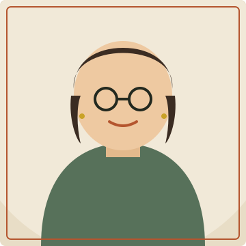

Chi tiết như đường chỉ
Mình dành thời gian cho khoảng cách, màu sắc và chữ viết — những thứ người dùng không để ý nhưng cảm nhận được.
Xin chào, mình là
Mình là sinh viên năm 3 ngành Công nghệ thông tin tại tp HCM, làm Frontend Developer bán thời gian. Mình tin rằng một giao diện tốt cũng cần sự tỉ mỉ như một mũi đan hay một chiếc bình gốm — chậm rãi, có chủ đích và hoàn thiện đến từng chi tiết.

Ba nguyên tắc mình luôn giữ khi thiết kế và code, dù là đồ án lớn hay dự án cá nhân nhỏ vào cuối tuần.
Mình dành thời gian cho khoảng cách, màu sắc và chữ viết — những thứ người dùng không để ý nhưng cảm nhận được.
Viết HTML/CSS/JS rõ ràng, đặt tên có nghĩa, để bất kỳ ai (kể cả mình sau 6 tháng) đọc lại vẫn hiểu ngay.
Trước khi vẽ giao diện, mình luôn hỏi: người dùng đang gặp khó khăn gì, và họ sẽ dùng tính năng này ra sao.
Một vài sản phẩm mình đã thực hiện trong học kỳ vừa qua và các dự án cá nhân.